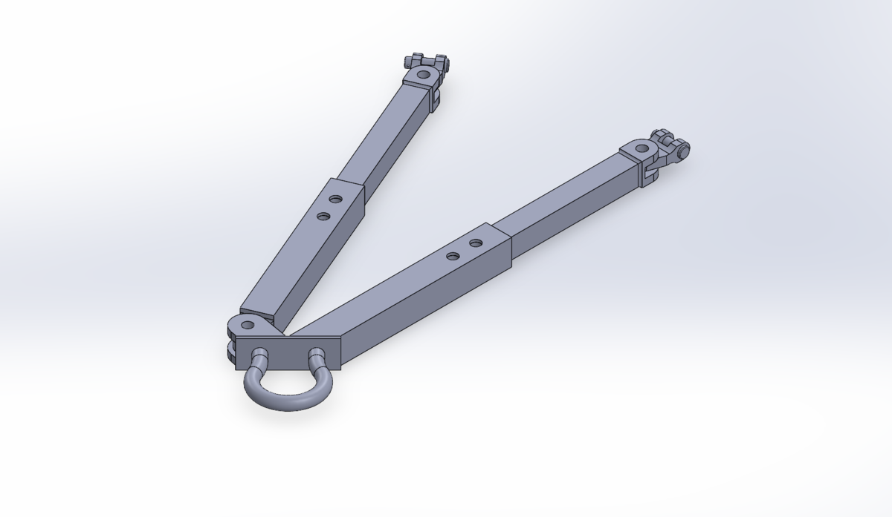
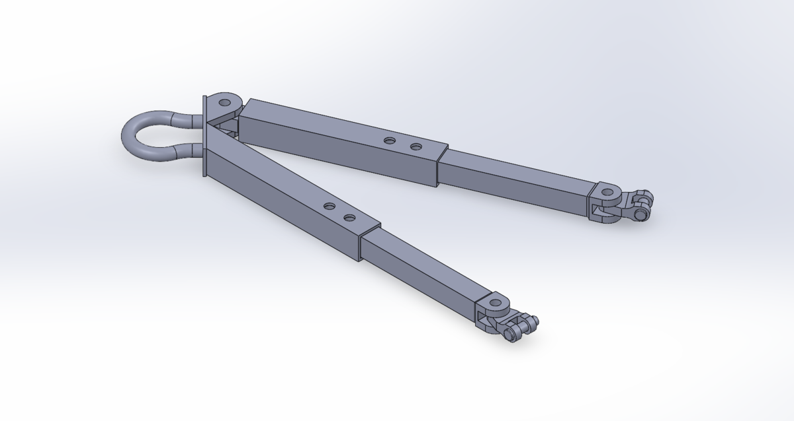
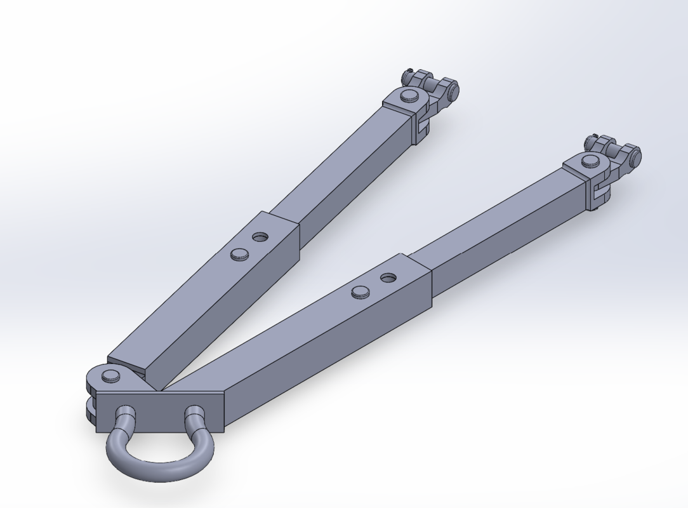
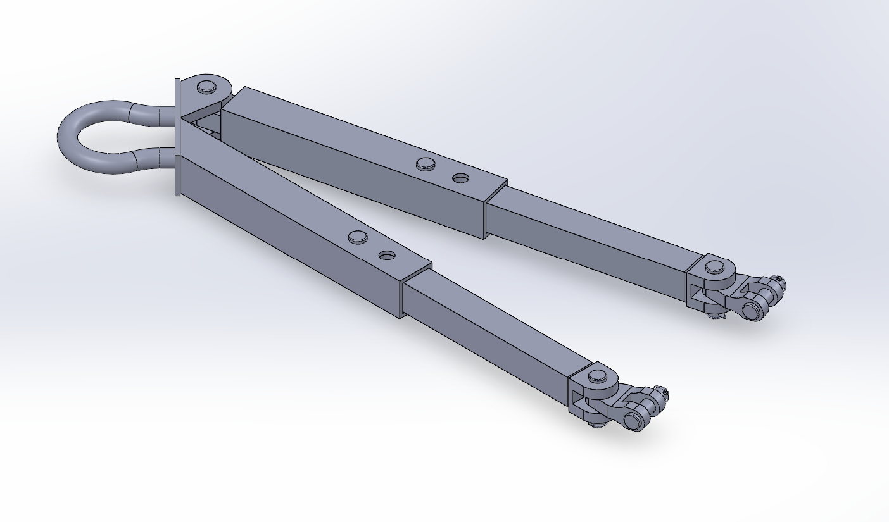
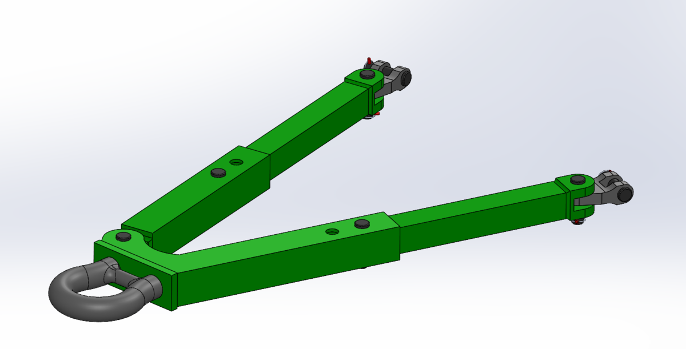

Heavy-Duty Tow Bar Assembly
This project focused on designing a heavy-duty tow bar intended for military vehicle applications. The main goal was to create a practical assembly that could handle towing loads while also considering structural integrity, manufacturability, assembly feasibility, and overall production planning.
1. Project Goal
The purpose of this project was to design a heavy-duty tow bar assembly for military vehicle towing applications. The design needed to be strong enough to withstand towing loads while also remaining practical to manufacture and assemble. In addition to the CAD model itself, the project also considered how the tow bar would be produced, how the parts would fit together, and what costs would be involved in manufacturing.
2. Initial CAD Model
The project began with the development of the tow bar assembly in SolidWorks. At this stage, the focus was on establishing the main structure of the assembly, the towing connection points, and the overall layout of the design. This first CAD model served as the starting point for evaluating how the tow bar would function as a complete heavy-duty assembly.


3. Design Refinements
After the initial model was created, slight changes were made to improve the design and better prepare it for final evaluation. These refinements focused on improving the part geometry, cleaning up the assembly, and making the design more practical from both a manufacturing and assembly standpoint. While the overall concept remained the same, these smaller changes helped create a more complete and realistic final design.


4. Final Design
The final design resulted in a complete heavy-duty tow bar assembly intended for military vehicle towing conditions. By this stage, the design reflected consideration of load requirements, structural layout, and assembly feasibility. The project also included a manufacturing and assembly plan, along with a cost analysis chart, to better understand how the design could be produced in a practical engineering setting.

5. Finite Element Analysis Under Towing Load
To evaluate the structural performance of the tow bar, finite element analysis was performed under towing load conditions. This analysis helped assess how the assembly would respond to the applied forces and provided insight into stress distribution and overall structural behavior. The purpose of this step was to verify that the design could support the expected towing loads while remaining practical as a heavy-duty mechanical component.